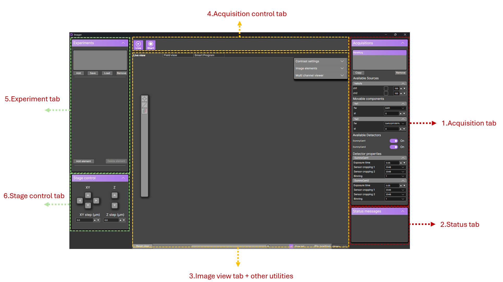
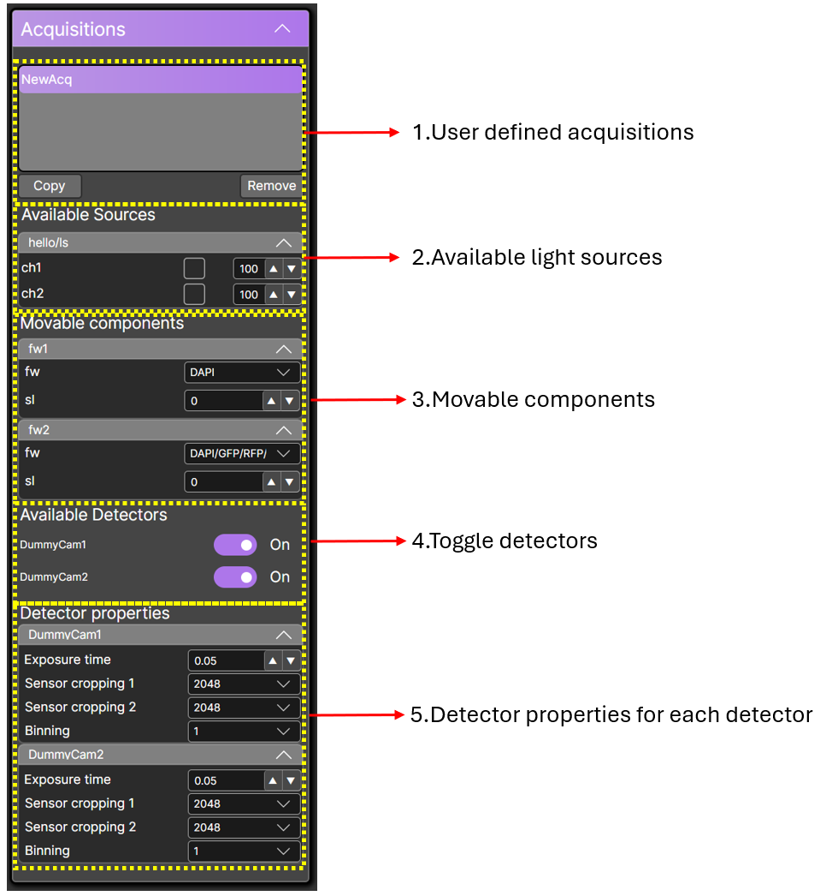
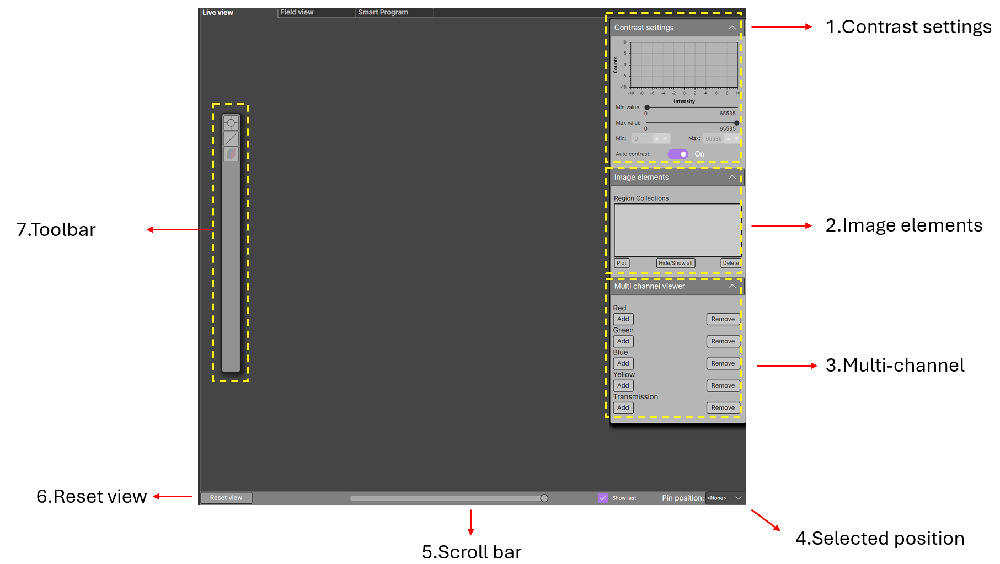
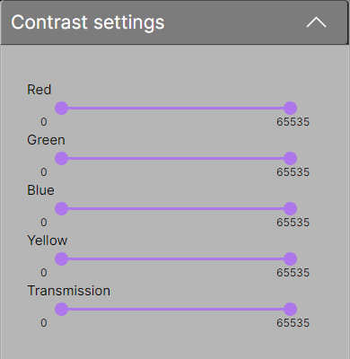
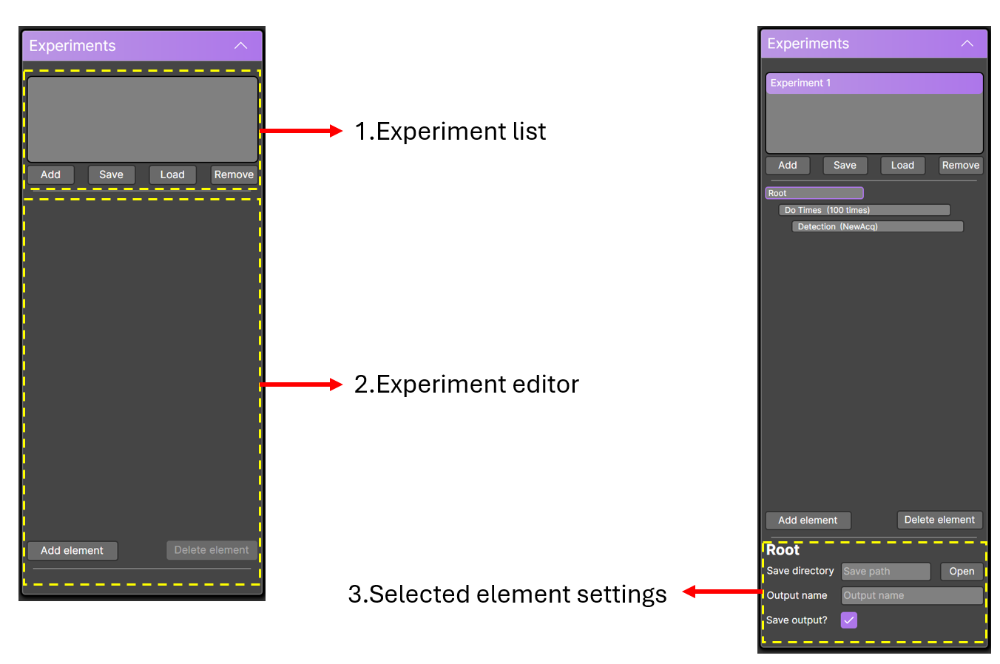

GUI Overview
This section provides an overview of the graphical user interface (GUI) and its main panels.
Panels Overview
The GUI consists of six main panels:

- Acquisitions tab – Configure hardware and acquisition settings. View user-defined acquisitions and individual hardware components.
- Status tab – Monitor the progress of measurements and the currently executing element.
- Image view tab – Main viewport for displaying acquired data. You can also switch to the Field View or Smart Program Editor.
- Acquisition control tab – Start live acquisition or run the currently selected experiment.
- Experiment tab – Create and manage experimental workflows.
- Stage control – Control the stage manually.
The following sections provide an in-depth guide for each panel.
Acquisitions Tab
The Acquisitions tab is used to define settings for all hardware components.

1. User-Defined Acquisitions
Here you can define new acquisition settings. Press Copy to create a new setting based on an existing one.
- Press Remove to delete an acquisition.
- Each acquisition must have a unique, non-empty name. Special characters are not allowed.
- The experiment will not start if duplicate names exist.
2. Available Light Sources
Displays all light sources grouped by equipment.
Enabling a light source: Check the box next to the light source name.
Adjusting power: Use the percentage slider (1–100%). If the slider is disabled, the setting is ignored.
3. Movable Components
Components can be discrete (e.g., filter wheel) or continuous (e.g., stepper motor).
Hover over numeric inputs to see the allowed range for continuous components.
Each movable component must have a setting selected.
4. Toggle Detectors
Imager supports multiple cameras (limited by data throughput).
You can toggle each camera on or off during acquisition.
5. Detector Properties
Adjust properties such as exposure time or cropping for each detector.
Status Tab
Displays the status of the current measurement and the active element.
Image View Tab
The Image View panel displays data during live acquisition or experiment runs.

1. Contrast Settings
Adjust contrast via the slider or input box. Enable or disable auto-contrast as needed.

2. Image Elements
Shows all overlay elements on the image.
See Live plotting and analysis tools for usage details.
3. Multi-Channel View
Configure and view up to 5 channels simultaneously (4 colors + 1 transmission).
See Multi-color display for instructions.
4. Selected Position
Filter displayed data by a tagged stage position during an experiment. Useful for reviewing specific positions.
5. Scroll Bar
Acts as a time axis for scrolling through previously acquired data.
6. Reset View
Resets all zoom and translation transformations applied by the user.
7. Toolbar
Contains image analysis tools and the multi-channel view toggle.
See Live plotting and analysis tools for a detailed guide.
Experiment Editor
The Experiment Editor allows editing and configuring experimental workflows.

1. Experiment List
Shows all available experiments.
You can add, remove, save, or load experiments from a file.
The currently selected experiment executes when Start is pressed. By default, no experiments exist.
2. Experiment Editor
Edit your workflow by adding or removing elements.
See Setting up your experiment for a detailed guide.
3. Selected Element Settings
Displays settings for the currently selected element.
More details about element types are available at Setting up your experiment.
Next Steps
After familiarizing yourself with the GUI, proceed to: